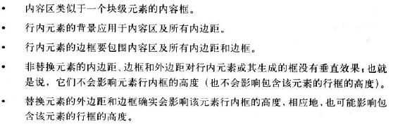

单行行内布局
多行行内布局多行行内布局 多行行内布局多行行内布局多行行内布局多行行内布局
匿名文本:所有为包含在行内元素中的字符。
em框：em框在字体中定义，也称为字符框。
内容区：在非替换元素中，元素区可能有两种：元素中各字符的em框串在一起构成的框或有元素中字符字形描述的框。在替换元素中，内容区就是元素的固有高度加上可能有的外边距、边框或内边距。
行间距：行间距(leading)是font-size值和line-height值之差。实际上这个差分为两半，分别应用到内容区的顶部和底部。另外，行间距只应用于非替换元素。
行内框：这个框通过内容框增加行间距来描述。对于非替换元素，元素行内框的高度刚好等于line-height的值。对于替换元素，元素行内框的高度则恰好等于内容区的高度，因为行间距不应用到替换元素。
行框：包含该行出现的行内框的最高点和最低点的最小框。
CSS还提供了一些行为和有用的概念
